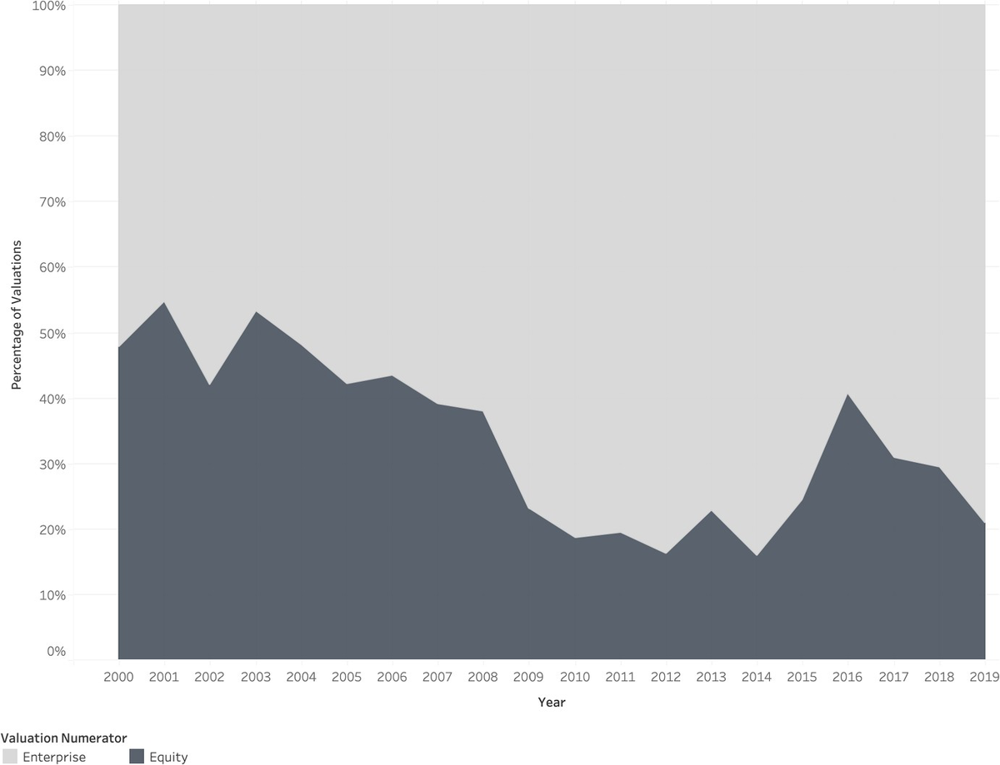
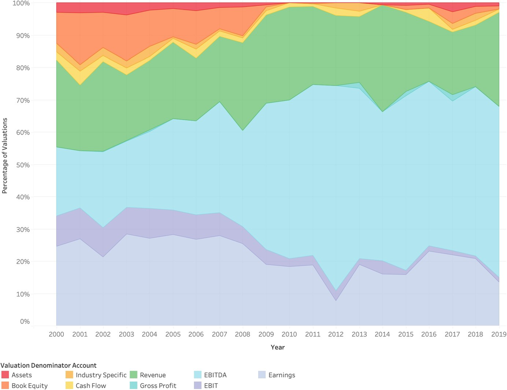
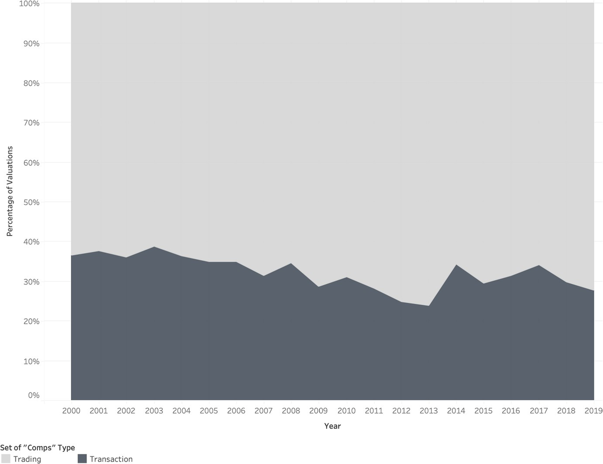

TheWrong Question
ON 13,019 MULTIPLES, 2,300 DEALS
AND THE HABIT UNDERNEATH THEM
A spreadsheet can be perfectly calculated and still answer the wrong question. I keep returning to that, because it is the failure nobody teaches you to look for. The arithmetic checks. The formatting is clean. The number at the bottom is wrong in a way no audit of the cells would ever surface, because the error was committed before the first cell was typed, in the choice of what to measure.
Matthew Shaffer went after a question the industry mostly skips. Not which valuation method is best, but which ones advisers actually reach for, and why. The answer runs to 13,019 valuation multiples across 2,300 deals between 2000 and 2020. It is a record of behaviour, not of accuracy. It tells you what the room does. It does not tell you the room is right.
What the file shows

Two decades, one drift. Equity numerators open near half of all observations in 2000 and fall to roughly a fifth by 2019, with a rally back toward 40 percent in 2016 that does not hold. The enterprise view, which values a business for its lenders and shareholders together rather than for shareholders alone, takes the ground equity gives up.
The textbook reason is clean. Enterprise value lets you compare two businesses financed differently. That reason is real. It is also, on the evidence, not the only thing operating.
The smoother number

Underneath the numerator drift is a denominator drift, and it is the more revealing of the two. EBITDA widens across the same twenty years while bottom-line earnings narrow.
Shaffer and Lee find that advisers facing unusual items in reported earnings move toward EBITDA because it is smoother. Note which way the causation runs. The choice of earnings measure pulls the analyst toward the enterprise view, rather than a considered judgement about capital structure pushing them there. The tail wags. I should be careful here: this supplements the financing explanation, it does not retire it.
But follow what the smoothing costs. Two businesses each report $100 million of EBITDA. One needs $10 million a year to keep its equipment running; the other needs $50 million. Before tax, before a dollar of working capital, $40 million a year separates them, and the multiple cannot see it. Depreciation is a crude estimate of exactly that cost. Strip it out and the comparison gets cleaner and less true in the same motion.
That is the problem with noise reduction generally. Some of the noise was load-bearing.
The forecast that cannot happen
The same reasoning reaches the discounted cash flow. Its logic is sound and its answer is only ever as good as the economic story in the inputs. A discount rate chosen because it is customary is not a statement about risk. It is a statement about habit.
The tell I look for is a forecast where revenue climbs every year while capital spending and working capital sit still. The arithmetic runs. The business does not. Growth consumes cash before it produces any. If a model will not say how the company grows, whether by spare capacity, price, efficiency or fresh investment, it has not made an argument. It has made a shape.
And at the end of the forecast the terminal value is often built from a multiple borrowed from the same comparable set that anchored the comps page. When the two methods then agree, that agreement is not confirmation. It is one assumption, counted twice.
The number both sides agree to recognise
Here is the part I find genuinely unsettling, in the useful way.
Shaffer's work on contentious valuations argues that reported historical figures survive not because anyone believes the past repeats, but because each side expects the other to recognise them. Economists call that a Schelling point: a place you meet not because it is optimal but because it is the obvious place to meet. He finds reliance on historical measures is stronger where coordination concerns are greater, even though forecasts are the better instrument for valuing anything.
A seller forecasts $120 million. A buyer expects $90 million. Both of them can see the reported $100 million. Neither believes it predicts the future. Both use it anyway.
That reframes the convention entirely. The historical multiple is not a measurement that happens to be popular. It is a negotiating surface that happens to be numerical.
Whose value is being estimated

Trading comparisons hold roughly two thirds of observations across the whole period. Transaction comparisons take the rest and never break 40 percent.
The two are not interchangeable, and the distinction is not academic. A trading comparison benchmarks what the market pays for a standalone business. A transaction comparison carries control, expected synergies, and whatever the bargaining produced. Blend them without saying so and a valuation range looks more informative than it is, because its width is coming from a category error rather than from real uncertainty.
Work the arithmetic. A company is worth $100 million alone and $150 million to one particular buyer whose operations overlap. A $120 million price hands the seller $20 million above standalone and keeps $30 million for the buyer. Both figures are correct. They answer different questions. Calling that price attractive without saying which question you answered is not analysis, it is a mood.
The premium has the same defect. A stock drifts from $40 to $50 on rumour, then takes a $60 offer. That is a 20 percent premium, or a 50 percent premium, depending only on which day you start counting. Neither number alone tells a shareholder whether they did well.
Shaffer's study of fairness opinions finds these valuations do carry information beyond the pre-deal price, including a read on synergies and a way to strip out rumour. He also finds evidence that advisers cater to their clients. Both are true at once, which is the honest and uncomfortable answer rather than either of the tidy ones.
The questions worth asking
- Why this earnings measure, and what does smoothing it hide?
- What spending makes this forecast achievable, and is it in the model?
- Does the terminal value assume the business stays independent, or changes hands?
- Would this conclusion survive a different, equally defensible benchmark?
- Are these two independent methods quietly sharing one assumption?
Learning the formulas makes a model usable. Answering those makes its conclusion worth anything.
A convention is not wisdom, and it is not laziness. It is the price of agreeing to stop arguing.

Sources
- Shaffer. Which Multiples Matter in M&A? An Overview. Published online, 2023. Figures 1, 2 and 3 above are its Figures 2, 3 and 5.
- Shaffer and Lee. Why Value the Enterprise en route to Equity? Working paper, 2022.
- Shaffer. Contentious Valuations: Accounting Reports as Schelling Points. Working paper, 2023.
- Shaffer. Are Third-Party Fundamental Valuations Relevant in Public-Company Takeovers? Published online, 2023.
Figures © Matthew Shaffer, reproduced under CC BY 4.0. The worked examples are illustrative applications written for this piece, not experiments from the underlying studies.